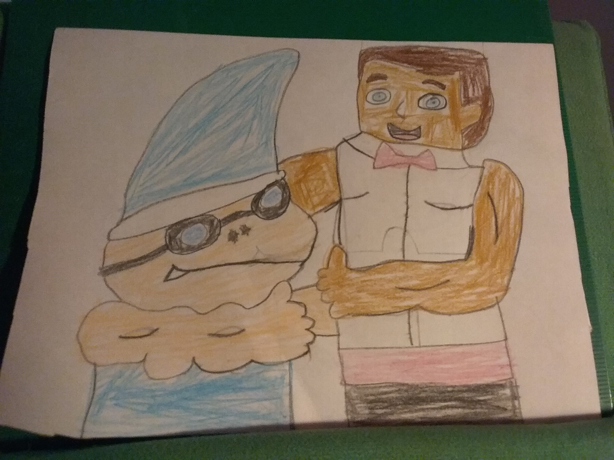

Cody is the only one to have the ability to speak in full, comprehensible sentences. The hand that comes out of his body beckons those around him to come closer. Penelope has fallen victim among many others. Cody is often separated from the rest because of this.
Junior
Of everyone contained, Cody has the most interest in Junior. Cody is often seen with, or around Junior the most out of anybody else.
Joseph
The two are often not seen near each other, due to Cody's danger and Joseph's shut-in nature. It is clear that the two don't seem to like one another, as both stare at each other for periods of time whenever the two are in the same room.
